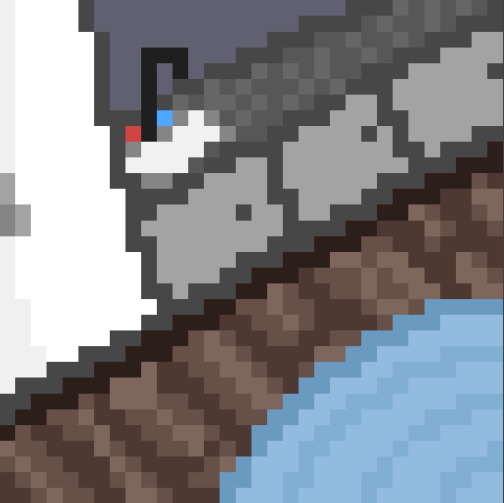

You toss and turn throughout the night, having dreams about what your new life will entail, some nightmares too. You had a recurring dream that you were lost in the woods with a howling creature...
You wake up to the faint smell of burnt firewood, with the sun breaking through your tattered curtains, you make a mental note to replace them at some point. You get out of bed and walk over to your kitchen. You prepare your favourite breakfast meal using the small amount of food supplies you bought with you for the morning, you'll go visit the local store later.
You eat your breakfast on the edge of your bed, thinking to yourself, 'what should I do first today?'